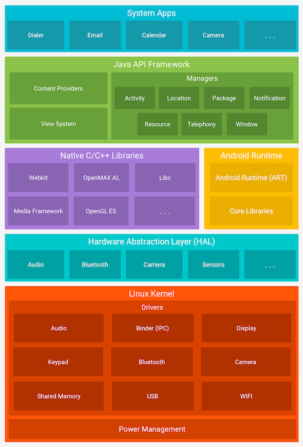
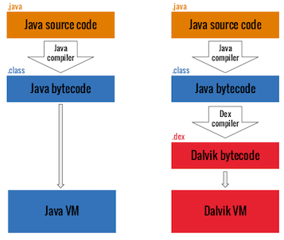
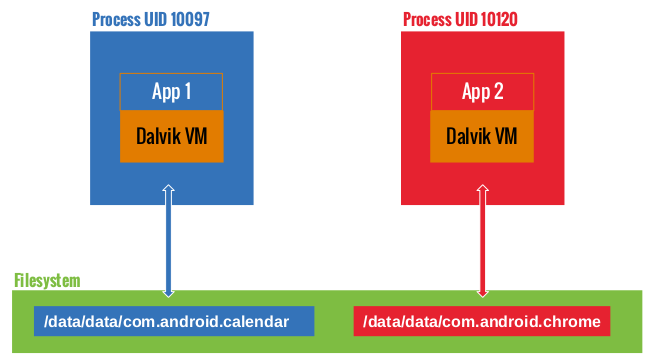

Android Platform Overview¶
This chapter introduces the Android platform from an architecture point of view. The following five key areas are discussed:
- Android architecture
- Android security: defense-in-depth approach
- Android application structure
- Android application publishing
- Android application attack surface
Visit the official Android developer documentation website for more details about the Android platform.
Android Architecture¶
Android is a Linux-based open source platform developed by Google, which serves as a mobile operating system (OS). Today the platform is the foundation for a wide variety of modern technology, such as mobile phones, tablets, wearable tech, TVs, and other "smart" devices. Typical Android builds ship with a range of pre-installed ("stock") apps and support installation of third-party apps through the Google Play store and other marketplaces.
Android's software stack is composed of several different layers. Each layer defines interfaces and offers specific services.

At the lowest level, Android is based on a variation of the Linux Kernel. On top of the kernel, the Hardware Abstraction Layer (HAL) defines a standard interface for interacting with built-in hardware components. Several HAL implementations are packaged into shared library modules that the Android system calls when required. This is the basis for allowing applications to interact with the device's hardware. For example, it allows a stock phone application to use a device's microphone and speaker.
Android apps are usually written in Java and compiled to Dalvik bytecode, which is somewhat different from the traditional Java bytecode. Dalvik bytecode is created by first compiling the Java code to .class files, then converting the JVM bytecode to the Dalvik .dex format with the d8 tool.

The current version of Android executes this bytecode on the Android runtime (ART). ART is the successor to Android's original runtime, the Dalvik Virtual Machine (DVM). The key difference between Dalvik and ART is the way the bytecode is executed.
In the DVM, bytecode is translated into machine code at execution time, a process known as just-in-time (JIT) compilation. This enables the runtime to benefit from the speed of compiled code while maintaining the flexibility of code interpretation. To further improve performance, Android introduced the Android Runtime (ART) to replace the DVM. ART uses a hybrid combination of ahead-of-time (AOT), JIT and profile-guided compilation. Apps are recompiled on the device when they are installed, or when the OS undergoes a major update. While the code is being recompiled, device-specific and advanced code optimizations techniques can be applied. The final recompiled code is then used for all subsequent executions. AOT improves performance by a factor of two while reducing power consumption, due to the device-specific optimizations.
Android apps don't have direct access to hardware resources, and each app runs in its own virtual machine or sandbox. This enables the OS to have precise control over resources and memory access on the device. For instance, a crashing app doesn't affect other apps running on the same device. Android controls the maximum number of system resources allocated to apps, preventing any one app from monopolizing too many resources. At the same time, this sandbox design can be considered as one of the many principles in Android's global defense-in-depth strategy. A malicious third-party application, with low privileges, shouldn't be able to escape its own runtime and read the memory of a victim application on the same device. In the following section we take a closer look at the different defense layers in the Android operating system.
Android Security: Defense-in-Depth Approach¶
The Android architecture implements different security layers that, together, enable a defense-in-depth approach. This means that the confidentiality, integrity or availability of sensitive user-data or applications doesn't hinge on one single security measure. This section brings an overview of the different layers of defense that the Android system provides. The security strategy can be roughly categorized into four distinct domains, each focusing on protecting against certain attack models.
- System-wide security
- Software isolation
- Network security
- Anti-exploitation
System-wide security¶
Device encryption¶
Android supports device encryption from Android 2.3.4 (API level 10) and it has undergone some big changes since then. Google imposed that all devices running Android 6.0 (API level 23) or higher had to support storage encryption, although some low-end devices were exempt because it would significantly impact their performance.
-
Full-Disk Encryption (FDE): Android 5.0 (API level 21) and above support full-disk encryption. This encryption uses a single key protected by the user's device password to encrypt and decrypt the user data partition. This kind of encryption is now considered deprecated and file-based encryption should be used whenever possible. Full-disk encryption has drawbacks, such as not being able to receive calls or not having operative alarms after a reboot if the user does not enter the password to unlock.
-
File-Based Encryption (FBE): Android 7.0 (API level 24) supports file-based encryption. File-based encryption allows different files to be encrypted with different keys so they can be deciphered independently. Devices that support this type of encryption support Direct Boot as well. Direct Boot enables the device to have access to features such as alarms or accessibility services even if the user didn't unlock the device.
Note: you might hear of Adiantum, which is an encryption method designed for devices running Android 9 (API level 28) and higher whose CPUs lack AES instructions. Adiantum is only relevant for ROM developers or device vendors, Android does not provide an API for developers to use Adiantum from applications. As recommended by Google, Adiantum should not be used when shipping ARM-based devices with ARMv8 Cryptography Extensions or x86-based devices with AES-NI. AES is faster on those platforms.
Further information is available in the Android documentation.
Trusted Execution Environment (TEE)¶
In order for the Android system to perform encryption it needs a way to securely generate, import and store cryptographic keys. We are essentially shifting the problem of keeping sensitive data secure towards keeping a cryptographic key secure. If the attacker can dump or guess the cryptographic key, the sensitive encrypted data can be retrieved.
Android offers a trusted execution environment in dedicated hardware to solve the problem of securely generating and protecting cryptographic keys. This means that a dedicated hardware component in the Android system is responsible for handling cryptographic key material. Three main modules are responsible for this:
-
Hardware-backed KeyStore: This module offers cryptographic services to the Android OS and third-party apps. It enables apps to perform cryptographic sensitive operations in an TEE without exposing the cryptographic key material.
-
StrongBox: In Android 9 (Pie), StrongBox was introduced, another approach to implement a hardware-backed KeyStore. While previous to Android 9 Pie, a hardware-backed KeyStore would be any TEE implementation that lies outside of the Android OS kernel. StrongBox is an actual complete separate hardware chip that is added to the device on which the KeyStore is implemented and is clearly defined in the Android documentation. You can check programmatically whether a key resides in StrongBox and if it does, you can be sure that it is protected by a hardware security module that has its own CPU, secure storage, and True Random Number Generator (TRNG). All the sensitive cryptographic operations happen on this chip, in the secure boundaries of StrongBox.
-
GateKeeper: The GateKeeper module enables device pattern and password authentication. The security sensitive operations during the authentication process happen inside the TEE that is available on the device. GateKeeper consists of three main components, (1)
gatekeeperdwhich is the service that exposes GateKeeper, (2) GateKeeper HAL, which is the hardware interface and (3) the TEE implementation which is the actual software that implements the GateKeeper functionality in the TEE.
Verified Boot¶
We need to have a way to ensure that code that is being executed on Android devices comes from a trusted source and that its integrity is not compromised. In order to achieve this, Android introduced the concept of verified boot. The goal of verified boot is to establish a trust relationship between the hardware and the actual code that executes on this hardware. During the verified boot sequence, a full chain of trust is established starting from the hardware-protected Root-of-Trust (RoT) up until the final system that is running, passing through and verifying all the required boot phases. When the Android system is finally booted you can rest assure that the system is not tampered with. You have cryptographic proof that the code which is running is the one that is intended by the OEM and not one that has been maliciously or accidentally altered.
Further information is available in the Android documentation.
Software Isolation¶
Android Users and Groups¶
Even though the Android operating system is based on Linux, it doesn't implement user accounts in the same way other Unix-like systems do. In Android, the multi-user support of the Linux kernel is used to sandbox apps: with a few exceptions, each app runs as though under a separate Linux user, effectively isolated from other apps and the rest of the operating system.
The file system/core/include/private/android_filesystem_config.h includes a list of the predefined users and groups system processes are assigned to. UIDs (userIDs) for other applications are added as the latter are installed. For more details, check out Bin Chen's blog post on Android sandboxing.
For example, Android 7.0 (API level 24) defines the following system users:
#define AID_ROOT 0 /* traditional unix root user */
#define AID_SYSTEM 1000 /* system server */
#...
#define AID_SHELL 2000 /* adb and debug shell user */
#...
#define AID_APP 10000 /* first app user */
...
SELinux¶
Security-Enhanced Linux (SELinux) uses a Mandatory Access Control (MAC) system to further lock down which processes should have access to which resources. Each resource is given a label in the form of user:role:type:mls_level which defines which users are able to execute which types of actions on it. For example, one process may only be able to read a file, while another process may be able to edit or delete the file. This way, by working on a least-privilege principle, vulnerable processes are more difficult to exploit via privilege escalation or lateral movement.
Further information is available on the Android documentation.
Permissions¶
Android implements an extensive permissions system that is used as an access control mechanism. It ensures controlled access to sensitive user data and device resources. Android categorizes permissions into different types offering various protection levels.
Prior to Android 6.0 (API level 23), all permissions an app requested were granted at installation (Install-time permissions). From API level 23 onwards, the user must approve some permissions requests during runtime (Runtime permissions).
Further information is available on the Android documentation including several considerations and best practices
To learn how to test app permissions refer to the Testing App Permissions section in the "Android Platform APIs" chapter.
Network security¶
TLS by Default¶
By default, since Android 9 (API level 28), all network activity is treated as being executed in a hostile environment. This means that the Android system will allow apps only to communicate over a network channel that is established using the Transport Layer Security (TLS) protocol. This protocol effectively encrypts all network traffic and creates a secure channel to a server. It may be the case that you would want to use clear traffic connections for legacy reasons. This can be achieved by adapting the res/xml/network_security_config.xml file in the application.
Further information is available in the Android documentation.
DNS over TLS¶
System-wide DNS over TLS support has been introduced since Android 9 (API level 28). It allows you to perform queries to DNS servers using the TLS protocol. A secure channel is established with the DNS server through which the DNS query is sent. This assures that no sensitive data is exposed during a DNS lookup.
Further information is available on the Android Developers blog.
Anti-exploitation¶
ASLR, KASLR, PIE and DEP¶
Address Space Layout Randomization (ASLR), which has been part of Android since Android 4.1 (API level 15), is a standard protection against buffer-overflow attacks, which makes sure that both the application and the OS are loaded to random memory addresses making it difficult to get the correct address for a specific memory region or library. In Android 8.0 (API level 26), this protection was also implemented for the kernel (KASLR). ASLR protection is only possible if the application can be loaded at a random place in memory, which is indicated by the Position Independent Executable (PIE) flag of the application. Since Android 5.0 (API level 21), support for non-PIE enabled native libraries was dropped. Finally, Data Execution Prevention (DEP) prevents code execution on the stack and heap, which is also used to combat buffer-overflow exploits.
Further information is available on the Android Developers blog.
SECCOMP Filter¶
Android applications can contain native code written in C or C++. These compiled binaries can communicate both with the Android Runtime through Java Native Interface (JNI) bindings, and with the OS through system calls. Some system calls are either not implemented, or are not supposed to be called by normal applications. As these system calls communicate directly with the kernel, they are a prime target for exploit developers. With Android 8 (API level 26), Android has introduced the support for Secure Computing (SECCOMP) filters for all Zygote based processes (i.e. user applications). These filters restrict the available syscalls to those exposed through bionic.
Further information is available on the Android Developers blog.
Android Application Structure¶
Communication with the Operating System¶
Android apps interact with system services via the Android Framework, an abstraction layer that offers high-level Java APIs. The majority of these services are invoked via normal Java method calls and are translated to IPC calls to system services that are running in the background. Examples of system services include:
- Connectivity (Wi-Fi, Bluetooth, NFC, etc.)
- Files
- Cameras
- Geolocation (GPS)
- Microphone
The framework also offers common security functions, such as cryptography.
The API specifications change with every new Android release. Critical bug fixes and security patches are usually applied to earlier versions as well. The oldest Android version supported at the time of writing is Android 8.1 (API level 27) and the current Android version is Android 10 (API level 29).
Noteworthy API versions:
- Android 4.2 (API level 16) in November 2012 (introduction of SELinux)
- Android 4.3 (API level 18) in July 2013 (SELinux became enabled by default)
- Android 4.4 (API level 19) in October 2013 (several new APIs and ART introduced)
- Android 5.0 (API level 21) in November 2014 (ART used by default and many other features added)
- Android 6.0 (API level 23) in October 2015 (many new features and improvements, including granting; detailed permissions setup at runtime rather than all or nothing during installation)
- Android 7.0 (API level 24-25) in August 2016 (new JIT compiler on ART)
- Android 8.0 (API level 26-27) in August 2017 (a lot of security improvements)
- Android 9 (API level 28) in August 2018 (restriction of background usage of mic or camera, introduction of lockdown mode, default HTTPS for all apps)
- Android 10 (API level 29) in September 2019 (notification bubbles, project Mainline)
The App Sandbox¶
Apps are executed in the Android Application Sandbox, which separates the app data and code execution from other apps on the device. As mentioned before, this separation adds a first layer of defense.
Installation of a new app creates a new directory named after the app package, which results in the following path: /data/data/[package-name]. This directory holds the app's data. Linux directory permissions are set such that the directory can be read from and written to only with the app's unique UID.

We can confirm this by looking at the file system permissions in the /data/data folder. For example, we can see that Google Chrome and Calendar are assigned one directory each and run under different user accounts:
drwx------ 4 u0_a97 u0_a97 4096 2017-01-18 14:27 com.android.calendar
drwx------ 6 u0_a120 u0_a120 4096 2017-01-19 12:54 com.android.chrome
Developers who want their apps to share a common sandbox can sidestep sandboxing. When two apps are signed with the same certificate and explicitly share the same user ID (having the sharedUserId in their AndroidManifest.xml files), each can access the other's data directory. See the following example to achieve this in the NFC app:
<manifest xmlns:android="http://schemas.android.com/apk/res/android"
package="com.android.nfc"
android:sharedUserId="android.uid.nfc">
Linux User Management¶
Android leverages Linux user management to isolate apps. This approach is different from user management usage in traditional Linux environments, where multiple apps are often run by the same user. Android creates a unique UID for each Android app and runs the app in a separate process. Consequently, each app can access its own resources only. This protection is enforced by the Linux kernel.
Generally, apps are assigned UIDs in the range of 10000 and 99999. Android apps receive a user name based on their UID. For example, the app with UID 10188 receives the user name u0_a188. If the permissions an app requested are granted, the corresponding group ID is added to the app's process. For example, the user ID of the app below is 10188. It belongs to the group ID 3003 (inet). That group is related to android.permission.INTERNET permission. The output of the id command is shown below.
$ id
uid=10188(u0_a188) gid=10188(u0_a188) groups=10188(u0_a188),3003(inet),
9997(everybody),50188(all_a188) context=u:r:untrusted_app:s0:c512,c768
The relationship between group IDs and permissions is defined in the following file:
frameworks/base/data/etc/platform.xml
<permission name="android.permission.INTERNET" >
<group gid="inet" />
</permission>
<permission name="android.permission.READ_LOGS" >
<group gid="log" />
</permission>
<permission name="android.permission.WRITE_MEDIA_STORAGE" >
<group gid="media_rw" />
<group gid="sdcard_rw" />
</permission>
Zygote¶
The process Zygote starts up during Android initialization. Zygote is a system service for launching apps. The Zygote process is a "base" process that contains all the core libraries the app needs. Upon launch, Zygote opens the socket /dev/socket/zygote and listens for connections from local clients. When it receives a connection, it forks a new process, which then loads and executes the app-specific code.
App Lifecycle¶
In Android, the lifetime of an app process is controlled by the operating system. A new Linux process is created when an app component is started and the same app doesn’t yet have any other components running. Android may kill this process when the latter is no longer necessary or when reclaiming memory is necessary to run more important apps. The decision to kill a process is primarily related to the state of the user's interaction with the process. In general, processes can be in one of four states.
- A foreground process (e.g., an activity running at the top of the screen or a running BroadcastReceiver)
-
A visible process is a process that the user is aware of, so killing it would have a noticeable negative impact on user experience. One example is running an activity that's visible to the user on-screen but not in the foreground.
-
A service process is a process hosting a service that has been started with the
startServicemethod. Though these processes aren't directly visible to the user, they are generally things that the user cares about (such as background network data upload or download), so the system will always keep such processes running unless there's insufficient memory to retain all foreground and visible processes. - A cached process is a process that's not currently needed, so the system is free to kill it when memory is needed.
Apps must implement callback methods that react to a number of events; for example, the
onCreatehandler is called when the app process is first created. Other callback methods includeonLowMemory,onTrimMemoryandonConfigurationChanged.
App Bundles¶
Android applications can be shipped in two forms: the Android Package Kit (APK) file or an Android App Bundle (.aab). Android App Bundles provide all the resources necessary for an app, but defer the generation of the APK and its signing to Google Play. App Bundles are signed binaries which contain the code of the app in several modules. The base module contains the core of the application. The base module can be extended with various modules which contain new enrichments/functionalities for the app as further explained on the developer documentation for app bundle. If you have an Android App Bundle, you can best use the bundletool command line tool from Google to build unsigned APKs in order to use the existing tooling on the APK. You can create an APK from an AAB file by running the following command:
$ bundletool build-apks --bundle=/MyApp/my_app.aab --output=/MyApp/my_app.apks
If you want to create signed APKs ready for deployment to a test device, use:
$ bundletool build-apks --bundle=/MyApp/my_app.aab --output=/MyApp/my_app.apks
--ks=/MyApp/keystore.jks
--ks-pass=file:/MyApp/keystore.pwd
--ks-key-alias=MyKeyAlias
--key-pass=file:/MyApp/key.pwd
We recommend that you test both the APK with and without the additional modules, so that it becomes clear whether the additional modules introduce and/or fix security issues for the base module.
Android Manifest¶
Every app has an Android Manifest file, which embeds content in binary XML format. The standard name of this file is AndroidManifest.xml. It is located in the root directory of the app’s Android Package Kit (APK) file.
The manifest file describes the app structure, its components (activities, services, content providers, and intent receivers), and requested permissions. It also contains general app metadata, such as the app's icon, version number, and theme. The file may list other information, such as compatible APIs (minimal, targeted, and maximal SDK version) and the kind of storage it can be installed on (external or internal).
Here is an example of a manifest file, including the package name (the convention is a reversed URL, but any string is acceptable). It also lists the app version, relevant SDKs, required permissions, exposed content providers, broadcast receivers used with intent filters and a description of the app and its activities:
<manifest
package="com.owasp.myapplication"
android:versionCode="0.1" >
<uses-sdk android:minSdkVersion="12"
android:targetSdkVersion="22"
android:maxSdkVersion="25" />
<uses-permission android:name="android.permission.INTERNET" />
<provider
android:name="com.owasp.myapplication.MyProvider"
android:exported="false" />
<receiver android:name=".MyReceiver" >
<intent-filter>
<action android:name="com.owasp.myapplication.myaction" />
</intent-filter>
</receiver>
<application
android:icon="@drawable/ic_launcher"
android:label="@string/app_name"
android:theme="@style/Theme.Material.Light" >
<activity
android:name="com.owasp.myapplication.MainActivity" >
<intent-filter>
<action android:name="android.intent.action.MAIN" />
</intent-filter>
</activity>
</application>
</manifest>
The full list of available manifest options is in the official Android Manifest file documentation.
App Components¶
Android apps are made of several high-level components. The main components are:
- Activities
- Fragments
- Intents
- Broadcast receivers
- Content providers and services
All these elements are provided by the Android operating system, in the form of predefined classes available through APIs.
Activities¶
Activities make up the visible part of any app. There is one activity per screen, so an app with three different screens implements three different activities. Activities are declared by extending the Activity class. They contain all user interface elements: fragments, views, and layouts.
Each activity needs to be declared in the Android Manifest with the following syntax:
<activity android:name="ActivityName">
</activity>
Activities not declared in the manifest can't be displayed, and attempting to launch them will raise an exception.
Like apps, activities have their own life cycle and need to monitor system changes to handle them. Activities can be in the following states: active, paused, stopped, and inactive. These states are managed by the Android operating system. Accordingly, activities can implement the following event managers:
- onCreate
- onSaveInstanceState
- onStart
- onResume
- onRestoreInstanceState
- onPause
- onStop
- onRestart
- onDestroy
An app may not explicitly implement all event managers, in which case default actions are taken. Typically, at least the onCreate manager is overridden by the app developers. This is how most user interface components are declared and initialized. onDestroy may be overridden when resources (like network connections or connections to databases) must be explicitly released or specific actions must occur when the app shuts down.
Fragments¶
A fragment represents a behavior or a portion of the user interface within the activity. Fragments were introduced Android with the version Honeycomb 3.0 (API level 11).
Fragments are meant to encapsulate parts of the interface to facilitate re-usability and adaptation to different screen sizes. Fragments are autonomous entities in that they include all their required components (they have their own layout, buttons, etc.). However, they must be integrated with activities to be useful: fragments can't exist on their own. They have their own life cycle, which is tied to the life cycle of the Activities that implement them.
Because fragments have their own life cycle, the Fragment class contains event managers that can be redefined and extended. These event managers included onAttach, onCreate, onStart, onDestroy and onDetach. Several others exist; the reader should refer to the Android Fragment specification for more details.
Fragments can be easily implemented by extending the Fragment class provided by Android:
Example in Java:
public class MyFragment extends Fragment {
...
}
Example in Kotlin:
class MyFragment : Fragment() {
...
}
Fragments don't need to be declared in manifest files because they depend on activities.
To manage its fragments, an activity can use a Fragment Manager (FragmentManager class). This class makes it easy to find, add, remove, and replace associated fragments.
Fragment Managers can be created via the following:
Example in Java:
FragmentManager fm = getFragmentManager();
Example in Kotlin:
var fm = fragmentManager
Fragments don't necessarily have a user interface; they can be a convenient and efficient way to manage background operations pertaining to the app's user interface. A fragment may be declared persistent so that if the system preserves its state even if its Activity is destroyed.
Content Providers¶
Android uses SQLite to store data permanently: as with Linux, data is stored in files. SQLite is a light, efficient, open source relational data storage technology that does not require much processing power, which makes it ideal for mobile use. An entire API with specific classes (Cursor, ContentValues, SQLiteOpenHelper, ContentProvider, ContentResolver, etc.) is available. SQLite is not run as a separate process; it is part of the app. By default, a database belonging to a given app is accessible to this app only. However, content providers offer a great mechanism for abstracting data sources (including databases and flat files); they also provide a standard and efficient mechanism to share data between apps, including native apps. To be accessible to other apps, a content provider needs to be explicitly declared in the manifest file of the app that will share it. As long as content providers aren't declared, they won't be exported and can only be called by the app that creates them.
Content providers are implemented through a URI addressing scheme: they all use the content:// model. Regardless of the type of sources (SQLite database, flat file, etc.), the addressing scheme is always the same, thereby abstracting the sources and offering the developer a unique scheme. Content providers offer all regular database operations: create, read, update, delete. That means that any app with proper rights in its manifest file can manipulate the data from other apps.
Services¶
Services are Android OS components (based on the Service class) that perform tasks in the background (data processing, starting intents, and notifications, etc.) without presenting a user interface. Services are meant to run processes long-term. Their system priorities are lower than those of active apps and higher than those of inactive apps. Therefore, they are less likely to be killed when the system needs resources, and they can be configured to automatically restart when enough resources become available. This makes services a great candidate for running background tasks. Please note that Services, like Activities, are executed in the main app thread. A service does not create its own thread and does not run in a separate process unless you specify otherwise.
Inter-Process Communication¶
As we've already learned, every Android process has its own sandboxed address space. Inter-process communication facilities allow apps to exchange signals and data securely. Instead of relying on the default Linux IPC facilities, Android's IPC is based on Binder, a custom implementation of OpenBinder. Most Android system services and all high-level IPC services depend on Binder.
The term Binder stands for a lot of different things, including:
- Binder Driver: the kernel-level driver
- Binder Protocol: low-level ioctl-based protocol used to communicate with the binder driver
- IBinder Interface: a well-defined behavior that Binder objects implement
- Binder object: generic implementation of the IBinder interface
- Binder service: implementation of the Binder object; for example, location service, and sensor service
- Binder client: an object using the Binder service
The Binder framework includes a client-server communication model. To use IPC, apps call IPC methods in proxy objects. The proxy objects transparently marshall the call parameters into a parcel and send a transaction to the Binder server, which is implemented as a character driver (/dev/binder). The server holds a thread pool for handling incoming requests and delivers messages to the destination object. From the perspective of the client app, all of this seems like a regular method call, all the heavy lifting is done by the Binder framework.

Binder Overview - Image source: Android Binder by Thorsten Schreiber
Services that allow other applications to bind to them are called bound services. These services must provide an IBinder interface to clients. Developers use the Android Interface Descriptor Language (AIDL) to write interfaces for remote services.
ServiceManager is a system daemon that manages the registration and lookup of system services. It maintains a list of name/Binder pairs for all registered services. Services are added with addService and retrieved by name with the static getService method in android.os.ServiceManager:
Example in Java:
public static IBinder getService(String name) {
try {
IBinder service = sCache.get(name);
if (service != null) {
return service;
} else {
return getIServiceManager().getService(name);
}
} catch (RemoteException e) {
Log.e(TAG, "error in getService", e);
}
return null;
}
Example in Kotlin:
companion object {
private val sCache: Map<String, IBinder> = ArrayMap()
fun getService(name: String): IBinder? {
try {
val service = sCache[name]
return service ?: getIServiceManager().getService(name)
} catch (e: RemoteException) {
Log.e(FragmentActivity.TAG, "error in getService", e)
}
return null
}
}
You can query the list of system services with the service list command.
$ adb shell service list
Found 99 services:
0 carrier_config: [com.android.internal.telephony.ICarrierConfigLoader]
1 phone: [com.android.internal.telephony.ITelephony]
2 isms: [com.android.internal.telephony.ISms]
3 iphonesubinfo: [com.android.internal.telephony.IPhoneSubInfo]
Intents¶
Intent messaging is an asynchronous communication framework built on top of Binder. This framework allows both point-to-point and publish-subscribe messaging. An Intent is a messaging object that can be used to request an action from another app component. Although intents facilitate inter-component communication in several ways, there are three fundamental use cases:
- Starting an activity
- An activity represents a single screen in an app. You can start a new instance of an activity by passing an intent to
startActivity. The intent describes the activity and carries necessary data. - Starting a service
- A Service is a component that performs operations in the background, without a user interface. With Android 5.0 (API level 21) and later, you can start a service with JobScheduler.
- Delivering a broadcast
- A broadcast is a message that any app can receive. The system delivers broadcasts for system events, including system boot and charging initialization. You can deliver a broadcast to other apps by passing an intent to
sendBroadcastorsendOrderedBroadcast.
There are two types of intents. Explicit intents name the component that will be started (the fully qualified class name). For instance:
Example in Java:
Intent intent = new Intent(this, myActivity.myClass);
Example in Kotlin:
var intent = Intent(this, myActivity.myClass)
Implicit intents are sent to the OS to perform a given action on a given set of data (The URL of the OWASP website in our example below). It is up to the system to decide which app or class will perform the corresponding service. For instance:
Example in Java:
Intent intent = new Intent(Intent.MY_ACTION, Uri.parse("https://www.owasp.org"));
Example in Kotlin:
var intent = Intent(Intent.MY_ACTION, Uri.parse("https://www.owasp.org"))
An intent filter is an expression in Android Manifest files that specifies the type of intents the component would like to receive. For instance, by declaring an intent filter for an activity, you make it possible for other apps to directly start your activity with a certain kind of intent. Likewise, your activity can only be started with an explicit intent if you don't declare any intent filters for it.
Android uses intents to broadcast messages to apps (such as an incoming call or SMS) important power supply information (low battery, for example), and network changes (loss of connection, for instance). Extra data may be added to intents (through putExtra/getExtras).
Here is a short list of intents sent by the operating system. All constants are defined in the Intent class, and the whole list is in the official Android documentation:
- ACTION_CAMERA_BUTTON
- ACTION_MEDIA_EJECT
- ACTION_NEW_OUTGOING_CALL
- ACTION_TIMEZONE_CHANGED
To improve security and privacy, a Local Broadcast Manager is used to send and receive intents within an app without having them sent to the rest of the operating system. This is very useful for ensuring that sensitive and private data don't leave the app perimeter (geolocation data for instance).
Broadcast Receivers¶
Broadcast Receivers are components that allow apps to receive notifications from other apps and from the system itself. With them, apps can react to events (internal, initiated by other apps, or initiated by the operating system). They are generally used to update user interfaces, start services, update content, and create user notifications.
There are two ways to make a Broadcast Receiver known to the system. One way is to declare it in the Android Manifest file. The manifest should specify an association between the Broadcast Receiver and an intent filter to indicate the actions the receiver is meant to listen for.
An example Broadcast Receiver declaration with an intent filter in a manifest:
<receiver android:name=".MyReceiver" >
<intent-filter>
<action android:name="com.owasp.myapplication.MY_ACTION" />
</intent-filter>
</receiver>
Please note that in this example, the Broadcast Receiver does not include the android:exported attribute. As at least one filter was defined, the default value will be set to "true". In absence of any filters, it will be set to "false".
The other way is to create the receiver dynamically in code. The receiver can then register with the method Context.registerReceiver.
An example of registering a Broadcast Receiver dynamically:
Example in Java:
// Define a broadcast receiver
BroadcastReceiver myReceiver = new BroadcastReceiver() {
@Override
public void onReceive(Context context, Intent intent) {
Log.d(TAG, "Intent received by myReceiver");
}
};
// Define an intent filter with actions that the broadcast receiver listens for
IntentFilter intentFilter = new IntentFilter();
intentFilter.addAction("com.owasp.myapplication.MY_ACTION");
// To register the broadcast receiver
registerReceiver(myReceiver, intentFilter);
// To un-register the broadcast receiver
unregisterReceiver(myReceiver);
Example in Kotlin:
// Define a broadcast receiver
val myReceiver: BroadcastReceiver = object : BroadcastReceiver() {
override fun onReceive(context: Context, intent: Intent) {
Log.d(FragmentActivity.TAG, "Intent received by myReceiver")
}
}
// Define an intent filter with actions that the broadcast receiver listens for
val intentFilter = IntentFilter()
intentFilter.addAction("com.owasp.myapplication.MY_ACTION")
// To register the broadcast receiver
registerReceiver(myReceiver, intentFilter)
// To un-register the broadcast receiver
unregisterReceiver(myReceiver)
Note that the system starts an app with the registered receiver automatically when a relevant intent is raised.
According to Broadcasts Overview, a broadcast is considered "implicit" if it does not target an app specifically. After receiving an implicit broadcast, Android will list all apps that have registered a given action in their filters. If more than one app has registered for the same action, Android will prompt the user to select from the list of available apps.
An interesting feature of Broadcast Receivers is that they can be prioritized; this way, an intent will be delivered to all authorized receivers according to their priority. A priority can be assigned to an intent filter in the manifest via the android:priority attribute as well as programmatically via the IntentFilter.setPriority method. However, note that receivers with the same priority will be run in an arbitrary order.
If your app is not supposed to send broadcasts across apps, use a Local Broadcast Manager (LocalBroadcastManager). They can be used to make sure intents are received from the internal app only, and any intent from any other app will be discarded. This is very useful for improving security and the efficiency of the app, as no interprocess communication is involved. However, please note that the LocalBroadcastManager class is deprecated and Google recommends using alternatives such as LiveData.
For more security considerations regarding Broadcast Receiver, see Security Considerations and Best Practices.
Implicit Broadcast Receiver Limitation¶
According to Background Optimizations, apps targeting Android 7.0 (API level 24) or higher no longer receive CONNECTIVITY_ACTION broadcast unless they register their Broadcast Receivers with Context.registerReceiver(). The system does not send ACTION_NEW_PICTURE and ACTION_NEW_VIDEO broadcasts as well.
According to Background Execution Limits, apps that target Android 8.0 (API level 26) or higher can no longer register Broadcast Receivers for implicit broadcasts in their manifest, except for those listed in Implicit Broadcast Exceptions. The Broadcast Receivers created at runtime by calling Context.registerReceiver are not affected by this limitation.
According to Changes to System Broadcasts, beginning with Android 9 (API level 28), the NETWORK_STATE_CHANGED_ACTION broadcast doesn't receive information about the user's location or personally identifiable data.
Android Application Publishing¶
Once an app has been successfully developed, the next step is to publish and share it with others. However, apps can't simply be added to a store and shared, they must be first signed. The cryptographic signature serves as a verifiable mark placed by the developer of the app. It identifies the app’s author and ensures that the app has not been modified since its initial distribution.
Signing Process¶
During development, apps are signed with an automatically generated certificate. This certificate is inherently insecure and is for debugging only. Most stores don't accept this kind of certificate for publishing; therefore, a certificate with more secure features must be created. When an application is installed on the Android device, the Package Manager ensures that it has been signed with the certificate included in the corresponding APK. If the certificate's public key matches the key used to sign any other APK on the device, the new APK may share a UID with the pre-existing APK. This facilitates interactions between applications from a single vendor. Alternatively, specifying security permissions for the Signature protection level is possible; this will restrict access to applications that have been signed with the same key.
APK Signing Schemes¶
Android supports three application signing schemes. Starting with Android 9 (API level 28), APKs can be verified with APK Signature Scheme v3 (v3 scheme), APK Signature Scheme v2 (v2 scheme) or JAR signing (v1 scheme). For Android 7.0 (API level 24) and above, APKs can be verified with the APK Signature Scheme v2 (v2 scheme) or JAR signing (v1 scheme). For backwards compatibility, an APK can be signed with multiple signature schemes in order to make the app run on both newer and older SDK versions. Older platforms ignore v2 signatures and verify v1 signatures only.
JAR Signing (v1 Scheme)¶
The original version of app signing implements the signed APK as a standard signed JAR, which must contain all the entries in META-INF/MANIFEST.MF. All files must be signed with a common certificate. This scheme does not protect some parts of the APK, such as ZIP metadata. The drawback of this scheme is that the APK verifier needs to process untrusted data structures before applying the signature, and the verifier discards data the data structures don't cover. Also, the APK verifier must decompress all compressed files, which takes considerable time and memory.
APK Signature Scheme (v2 Scheme)¶
With the APK signature scheme, the complete APK is hashed and signed, and an APK Signing Block is created and inserted into the APK. During validation, the v2 scheme checks the signatures of the entire APK file. This form of APK verification is faster and offers more comprehensive protection against modification. You can see the APK signature verification process for v2 Scheme below.

APK Signature Scheme (v3 Scheme)¶
The v3 APK Signing Block format is the same as v2. V3 adds information about the supported SDK versions and a proof-of-rotation struct to the APK signing block. In Android 9 (API level 28) and higher, APKs can be verified according to APK Signature Scheme v3, v2 or v1 scheme. Older platforms ignore v3 signatures and try to verify v2 then v1 signature.
The proof-of-rotation attribute in the signed-data of the signing block consists of a singly-linked list, with each node containing a signing certificate used to sign previous versions of the app. To make backward compatibility work, the old signing certificates sign the new set of certificates, thus providing each new key with evidence that it should be as trusted as the older key(s). It is no longer possible to sign APKs independently, because the proof-of-rotation structure must have the old signing certificates signing the new set of certificates, rather than signing them one-by-one. You can see the APK signature v3 scheme verification process below.

APK Signature Scheme (v4 Scheme)¶
The APK Signature Scheme v4 was introduced along with Android 11.0 (API level 30). which requires all devices launched with it to have fs-verity enabled by default. fs-verity is a Linux kernel feature that is primarily used for file authentication (detection of malicious modifications) due to its extremely efficient file hash calculation. Read requests only will succeed if the content verifies against trusted digital certificates that were loaded to the kernel keyring during boot time.
The v4 signature requires a complementary v2 or v3 signature and in contrast to previous signature schemes, the v4 signature is stored in a separate file <apk name>.apk.idsig. Remember to specify it using the --v4-signature-file flag when verifying a v4-signed APK with apksigner verify.
You can find more detailed information in the Android developer documentation.
Creating Your Certificate¶
Android uses public/private certificates to sign Android apps (.apk files). Certificates are bundles of information; in terms of security, keys are the most important type of this information Public certificates contain users' public keys, and private certificates contain users' private keys. Public and private certificates are linked. Certificates are unique and can't be re-generated. Note that if a certificate is lost, it cannot be recovered, so updating any apps signed with that certificate becomes impossible.
App creators can either reuse an existing private/public key pair that is in an available KeyStore or generate a new pair.
In the Android SDK, a new key pair is generated with the keytool command. The following command creates a RSA key pair with a key length of 2048 bits and an expiry time of 7300 days = 20 years. The generated key pair is stored in the file 'myKeyStore.jks', which is in the current directory):
$ keytool -genkey -alias myDomain -keyalg RSA -keysize 2048 -validity 7300 -keystore myKeyStore.jks -storepass myStrongPassword
Safely storing your secret key and making sure it remains secret during its entire life cycle is of paramount importance. Anyone who gains access to the key will be able to publish updates to your apps with content that you don't control (thereby adding insecure features or accessing shared content with signature-based permissions). The trust that a user places in an app and its developers is based totally on such certificates; certificate protection and secure management are therefore vital for reputation and customer retention, and secret keys must never be shared with other individuals. Keys are stored in a binary file that can be protected with a password; such files are referred to as KeyStores. KeyStore passwords should be strong and known only to the key creator. For this reason, keys are usually stored on a dedicated build machine that developers have limited access to. An Android certificate must have a validity period that's longer than that of the associated app (including updated versions of the app). For example, Google Play will require certificates to remain valid until Oct 22nd, 2033 at least.
Signing an Application¶
The goal of the signing process is to associate the app file (.apk) with the developer's public key. To achieve this, the developer calculates a hash of the APK file and encrypts it with their own private key. Third parties can then verify the app's authenticity (e.g., the fact that the app really comes from the user who claims to be the originator) by decrypting the encrypted hash with the author’s public key and verifying that it matches the actual hash of the APK file.
Many Integrated Development Environments (IDE) integrate the app signing process to make it easier for the user. Be aware that some IDEs store private keys in clear text in configuration files; double-check this in case others are able to access such files and remove the information if necessary.
Apps can be signed from the command line with the 'apksigner' tool provided by the Android SDK (API level 24 and higher). It is located at [SDK-Path]/build-tools/[version]. For API 24.0.2 and below, you can use 'jarsigner', which is part of the Java JDK. Details about the whole process can be found in official Android documentation; however, an example is given below to illustrate the point.
$ apksigner sign --out mySignedApp.apk --ks myKeyStore.jks myUnsignedApp.apk
In this example, an unsigned app ('myUnsignedApp.apk') will be signed with a private key from the developer KeyStore 'myKeyStore.jks' (located in the current directory). The app will become a signed app called 'mySignedApp.apk' and will be ready to release to stores.
Zipalign¶
The zipalign tool should always be used to align the APK file before distribution. This tool aligns all uncompressed data (such as images, raw files, and 4-byte boundaries) within the APK that helps improve memory management during app runtime.
Zipalign must be used before the APK file is signed with apksigner.
Publishing Process¶
Distributing apps from anywhere (your own site, any store, etc.) is possible because the Android ecosystem is open. However, Google Play is the most well-known, trusted, and popular store, and Google itself provides it. Amazon Appstore is the trusted default store for Kindle devices. If users want to install third-party apps from a non-trusted source, they must explicitly allow this with their device security settings.
Apps can be installed on an Android device from a variety of sources: locally via USB, via Google's official app store (Google Play Store) or from alternative stores.
Whereas other vendors may review and approve apps before they are actually published, Google will simply scan for known malware signatures; this minimizes the time between the beginning of the publishing process and public app availability.
Publishing an app is quite straightforward; the main operation is making the signed APK file downloadable. On Google Play, publishing starts with account creation and is followed by app delivery through a dedicated interface. Details are available at the official Android documentation.
Android Application Attack Surface¶
The Android application attack surface consists of all components of the application, including the supportive material necessary to release the app and to support its functioning. The Android application may be vulnerable to attack if it does not:
- Validate all input by means of IPC communication or URL schemes, see also:
- Testing for Sensitive Functionality Exposure Through IPC
- Testing Deep Links
- Validate all input by the user in input fields.
- Validate the content loaded inside a WebView, see also:
- Testing JavaScript Execution in WebViews
- Testing WebView Protocol Handlers
- Determining Whether Java Objects Are Exposed Through WebViews
- Securely communicate with backend servers or is susceptible to man-in-the-middle attacks between the server and the mobile application, see also:
- Testing Network Communication
- Android Network APIs
- Securely stores all local data, or loads untrusted data from storage, see also:
- Data Storage on Android
- Protect itself against compromised environments, repackaging or other local attacks, see also:
- Android Anti-Reversing Defenses